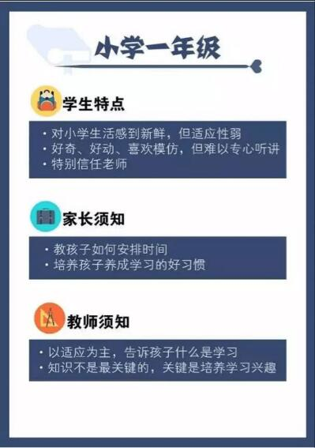
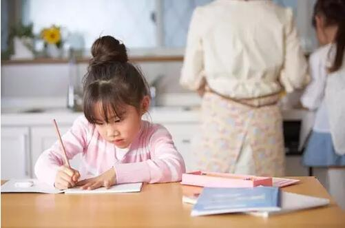
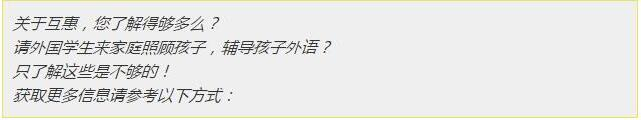

互惠动态
|
|
一到六年级学生心理特点和学习规划详细指南
六年级才开始为孩子做小升初的准备？NO！智慧的家长、老师是从一年级就开始的。怎样准备呢？从掌握各个年级学生的心理特点和指导他们进行各阶段的学习规划开始……
一年级
1. 心理特点指南

2. 学习规划指南：学习从小习惯着手
一年级的小学生刚告别幼儿园的轻松课程，一下子进入小学后无论是行为习惯还是知识技能方面都有了不同的要求，那孩子们应该怎么度过这个关键期呢？
这里提四点建议：
一、是让孩子意识到自己已经长大了，要读小学了。
二、是允许孩子们在刚升上小学时，自然地表达自己哪些地方觉得不习惯，不让孩子觉得有这样的想法很丢脸。
三、是多交一些新朋友，扩大自己的生活圈。
四、是形成良好的学习习惯和方法
首先要让孩子喜欢学校，在开学前，可以事先了解家庭周围有没有与孩子同龄同校的邻居，设法让他们认识，约好入学第一天一同上学。其次要从小习惯着手，引导孩子学会自立，尤其要注意帮助孩子养成早睡早起的习惯，以适应升入小学后每天准时到校的作息。

二年级
1. 心理特点指南

2. 学习规划指南：学习开始注重阅读和积累
升入二年级之后，语文学习方面的重点就不仅仅在于生字、词语的训练了，还要引起对学生阅读和写作方面的兴趣。孩子要积累材料，阅读是至关重要的。二年级的孩子已经具备了阅读书籍的能力，并且初步有了评判一本书、一个故事是否适合自己的判断力。所以，家长在这个阶段就要特别注意多给孩子创造阅读的空间和氛围。在给孩子选取阅读的书目时，不要只局限于某一类图书，只要是积极正面健康的书籍，都可以给孩子看。
另外，不要认为积累只能限于文字积累，在生活中家长可以带着孩子口头积累。二年级的学生在语文学习方面还属于起步阶段，家长在注重学生书面的字词句时，也要注意学生在生活中说一句话时是否完整，经常有意识的训练，会起到意想不到的效果。
二年级是孩子学习习惯、学习态度从可塑性强转向逐渐定型的重要过渡阶段。所以在一年级升二年级暑假中，要更加注重孩子的学习兴趣引导与学习习惯辅导，使得孩子在学习兴趣，学习方法，学习心态上得到全面发展。同时处在这一时期的孩子更需要家长关切的眼神、真诚的鼓励和热情地帮助，只要家长能够正确引导，孩子就会顺利度过这一时期。
一年级升二年级之后的学习，最主要的还是习惯的培养，和基础知识的把握。因为接下来的三年级是小学课程转化的重要年级，学习内容多了，难度大了，孩子要保持高分，需要花费更多的力气，付出更多的努力，如果在加上学习习惯马虎的话，成绩很容易大幅下滑。

三年级
1. 心理特点指南

2. 学习规划指南：英语学习的转折期
二年级升三年级后是一个两极分化的阶段，课程内容从培养学习兴趣转向大量知识系统性的学习，孩子往往不能及时的消化吸收所学的知识，加上训练的不足，会出现遗忘，理解混乱等现象，所以提前让孩子适应中年级的学习尤为重要。
三年级是小学英语学习最为重要的转折期，是成绩分化的开始。公立小学开始要求学生背单词。因此围绕日常生活话题开展学习并积累和拓展足够多的词汇量，保证充足的语言输入是这一时期学生英语学习的重点。英语从三年级开始，除了口语测试，还加入笔试检测，内容分为听力和笔试两部分。同时词汇也需要逐步积累好牢牢掌握，对课文进行默背。
语文方面，三年级重点在于识字、字词理解及运用、初步把握文章的思想感情，而难点在于习作练习。三年级是习作学习的一个重要的转折期，是十分关键的。习作要求明显高于二年级，从几句话的段要写到完整的一篇文章，字数也有了明显的提升。如果孩子不能很好地过渡，将直接影响孩子对作文的兴趣，有的孩子甚至从此害怕作文。
三年级是小学语文的一个重要转折时期，语文课文由原来的文字简单、情节单纯转向课文内容有一定的深度，字词也逐渐成为帮助读通课文的工具，而不是学习的重点了。在这个时期，让孩子养成独立思考、自主学习的习惯是非常重要的。
三年级数学的学习需要加强孩子的数学应用意识，不断丰富解决问题的策略，提高解决问题的能力。培养孩子的如何进行初步的分析、综合、比较、抽象、概括，对简单的问题进行判断、推理、逐步学会有条理、有根据地思考问题，同时注意培养思维的敏捷性和灵活性。在日常学习生活中能撇开事物的具体形象，抽取事物的本质属性，从而获取新的知识。

四年级
1. 心理特点指南

2. 学习规划指南：四年级学习是由中年段到高年段的承接期
四年级学生语文学习会出现的问题主要有二：一是阅读理解和语言的应用技巧不足，以致阅读题会出现答题不完整，概括能力较弱等情况。家长要注意多用生活中的实例引导孩子，加深对语言文字的理解与运用；还可以结合课文的学习，引导课外阅读，让孩子的课外阅读变得更加广泛而有效。
二是作文缺少生活素材，很难使文章生动具体。四年级的作文包括写人、写事、写景、写生活、写感想、体会等。这当中写实占大多数，写实是为了让孩子从日常生活出发，写出自己的所想、所见、所感、所做，所以平时家长可以鼓励孩子如实表达，让他们随时把自己的所想、所见及时记在日记本中，帮助增加写作的素材。
英语方面怎么学习呢？经过三年级一年的知识积累，学生已有基本的英语学习基础及习惯，但在语言的应用方面常会出现一些语法错误，这是语法启蒙的黄金时期。这就要求在提高听说读写技能的同时，英语学习应以实用常考句型积累为主，以启发学生对语法的感知与应用。可是往往这个时候很多家长就会盲目地为孩子选择过多或过难的课外英语学习内容，进入了学习的误区。
就学习习惯而言，这个阶段是孩子习惯的定型期，各种学习习惯将开始逐步固化下来，甚至伴随孩子一生。当然这种学习习惯既包括了好的习惯，也包括不好的痼疾。
就学习内容而言，难度有了质的改变。在三四年级时，孩子的书面语言开始超过口头语言。这个时候，孩子的成绩偶尔下滑是正常的，关键在于我们家长要正确帮助他们，而利用好三年级升四年级的暑假，则可以充分帮助孩子做好准备，跟上学习，顺利翻过小学阶段成绩分水岭。
语文指导：
随着学习难度的提升，三年级升四年级的同学会明显感觉语文不再像以往那样可以轻松拿高分了。四年级学生的思维处于形象思维向抽象逻辑思维过渡的阶段，语文学习内容由词句向篇章过渡，学生无论从心理发展还是学习习惯养成等方面都在小学阶段起着承上启下的作用，既有一定的难度，又非常重要。
数学指导：
开始接触杯赛和升学考试必考的几何、计数、行程、数论等内容，并开始接触五六年级学校统测、小升初考试及杯赛必考的列方程解应用题。全面进入杯赛和小升初筹备阶段。孩子数学体系日趋完善，逐步接触小学奥数学四大体系：几何、计数、数论、组合，需要通过知识提升为今后的各大杯赛和小升初考试做充足准备。
英语指导：
四年级是小学阶段英语学习的过渡和连接阶段，是非常重要的阶段。在这个时期，已经从单词的学习逐渐转移到句型的学习。在这个阶段，培养学生的学习兴趣依然十分重要，学生在这个时期已经掌握了一定的单词和简单的句型，因此可以给学生补充一些英语小短片，小歌曲，这样不仅仅可以提高学生的兴趣，还可以扩大学生的知识面。

五年级
1. 心理特点指南

2. 学习规划指南：五年级是由以前的被动接受转化为主动吸收的时期
五年级学习内容以及难度都有了很大的变化，因此这一阶段会引发比较明显的分化情况。语文方面，孩子学的字词更难了，易错字多了，阅读和作文扣分也明显多了。这一阶段，课本的基础字词难度会更大；阅读方面则主要考察学生的阅读速度以及对于阅读文章的分析能力；而作文则需要学生有新颖的构思和恰当的修辞等。
英语方面，五年级是小学英语学习的分水岭。五年级应开始培养良好的英文素养，可以试着听你喜欢的英文歌曲，跟着唱。看英文电影，以愉快的心情去欣赏。还可以购买一些你喜欢的英文书籍去阅读。
从五年级开始，学习重点知识和难点逐渐和孩子们见面，这些知识点不仅是历年来小升初考察的重点，更是孩子展现实力的最好证明。较之四年级，五年级的专题增加了很多问题等，这些知识点使得我们的孩子开始对学习力不从心，拿不出学习该有的节奏。另外，在难度上的加深，梯度也十分明显，孩子一定要在学习上花更多的工夫。
学习方法的变化：善于总结，稳扎稳打，力争突破。
进入五年级，一定要明确这是孩子学习的关键，因为六年级我们的学习任务就是小升初复习，因此五年级时如果基础知识不够扎实的话，那我们到小升初时也会力不从心。
在五年级上学期，这是一个完全接纳新知识的阶段，重点、难点内容的增加，对我们这个阶段的要求就是总结知识点，而不是传统的“听课，完成作业”。面对有一定学习难度的内容，我们留下的问题会很多很多，题目的变化也会多种多样，我们要总结老师讲的知识点，总结做过的题型，在总结的过程中找到知识点的联系，在总结的过程中找出不同，总结越多，思考越多，超越也就会越多。
五年级上的建议：有自己的归纳整理本，坚持每日做一题，懂一题，将错题滚动练习，将知识点网状化，不懂就问，举一反三。
五年级下的建议：我们应当主动去接触各类考试题目，分析每个竞赛的特点，滚动做自己不会的题目，善于总结，在重点和热点上多花工夫，加深难度，找到适合自己的复习方法。

六年级
1. 心理特点指南

2. 学习规划指南：六年级，开始张罗小升初
刚升入六年级，很多家长就开始张罗小升初。这两年，小升初政策变化很大，无论政策如何变化，家长们需要明确的是，孩子自身的学习能力才是最重要的竞争力。在小升初备考的开始阶段，家长们要建立孩子自信的心理，引导孩子尽量多接触课外知识。要在最后一年多陪在孩子身边，做他们的精神支柱，快速提高孩子的学习效率、解题速度；多关注社会新闻、增加语文及英语的阅读量，积累丰富的课外阅读及英语词汇。而最关键的，就是科学有序地规划孩子在这一年的学习生活。
语文方面，要抓学生的阅读理解能力，六年级阅读学习提到了一个新的高度。与阅读积累密不可分的是作文，六年级孩子的习作分数提升了，习作要求也更高了，这一学段重在写纪实作文与想象作文。
面对纷繁复杂的小升初，大部分刚开接触的家长都是茫然和焦虑的。家长要调整好自己的心态，别把压力和焦虑的心情传染给了孩子，影响孩子的学习。名校是好，但适合孩子的学校才是最好的。
